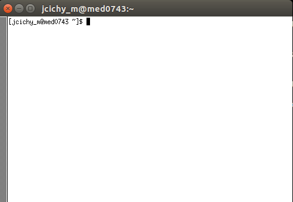

Connecting via SSH on Unix¶
Hint
Please read the pre-requisites. Especially pay attention to the username.
Activating your Key in the SSH Key Agent¶
Activate the key (if this is your first SSH key then it will be enabled by default) by making sure ssh-agent runs in the background
# eval "$(ssh-agent -s)"
and adding the key
# ssh-add
or if you created another key, specify the file name, e.g. ~/.ssh/mdc_id_rsa
# ssh-add ~/.ssh/mdc_id_rsa
MacOS¶
If you run into problems that your key is not accepted when connecting from MacOS, please use:
# ssh-add -K
Connect to the cluster¶
If you are within CUBI, Charite or the MDC, then one of the
following commands should work now (<USERNAME> is the
cluster username). This will connect you to the login node.
# ssh -A -t -l <USERNAME> med-login<X>.bihealth.org
<X>can be either1or2- Use
med-login<X>instead ofmed-transfer<X>.bihealth.orgfor file transfers!
Warning
Do not perform any computation on the login nodes
Connecting from outside of MDC network (for MDC Users only)¶
Danger
If you are outside of MDC or CUBI then use the following two commands to
first connect from your client to the SSH gateway (ssh1 aka jail1) and then
connect to the login node. Charite users have no possibility to connect from outside.
Note that for logging into the jail, the <MDC_USER> is required.
Make sure to add your key, otherwise the forwarding does not work:
$ ssh-add
Connect to the hop-node:
$ ssh -A -t -l <MDC_USER> ssh1.mdc-berlin.de
...
jail1 $ ssh -A -t -l <USERNAME> med-login<X>.bihealth.org
<X>can be either1or2
On the cluster, the following brings you to a cluster node where you can compute as much as the node can chew.
med-login<X> $ qrsh
Connecting with another computer/laptop¶
If you need to connect to the cluster from another computer than the one that contains the SSH keys that you submitted for the cluster login, you have two possibilities.
- Generate another SSH key pair and submit the public part as described beforehand.
- Copy your private part of the SSH key (
~/.ssh/id_rsa) to the second computer into the same location.
Danger
Do not leave the key on any USB stick. Delete it after file transfer. This is a sensible part of data. Make sure that the files are only readable for you.
$ cd ~/.ssh
$ chmod g-rwx id_rsa*
$ ssh-add id_rsa
File System mount via sshfs¶
$ sshfs -o follow_symlinks -l <USERNAME>@med-transfer<X>.bihealth.org:/ <MOUNTPOINT>
<X>can be either1or2med-transfer<X>:/follows the structure<host>:<directory>; in our case it refers to the cluster root folder but can be any path available to you on the cluster and gives the folder that will be mounted.<MOUNTPOINT>must be an empty but existing and readable directory on your local computer
On MacOS, make sure you have both OSXFUSE and SSHFS installed. You can get both from here: https://osxfuse.github.io/ or the most recent version via Homebrew:
$ brew cask install osxfuse; brew install sshfs; brew link --overwrite sshfs
$ sshfs -o follow_symlinks <USERNAME>@med-transfer<X>.bihealth.org:<directory_relative_to_Cluster_root> <MOUNTPOINT> -o volname=<BIH-FOLDER> -o allow_other,noapplexattr,noappledouble
Configure SSH Client¶
Add the following lines to your ~/.ssh/config file for more comfortable access to the cluster.
Replace MDC_USER_NAME with your MDC user name.
Host bihcluster
ForwardAgent yes
ForwardX11 yes
HostName med-login1.bihealth.org
User MDC_USER_NAME
RequestTTY yes
Host bihcluster2
ForwardAgent yes
ForwardX11 yes
HostName med-login2.bihealth.org
User MDC_USER_NAME
RequestTTY yes
Host bihcluster3
ForwardAgent yes
ForwardX11 yes
HostName med-login3.bihealth.org
User MDC_USER_NAME
RequestTTY yes
Now, you can do type the following (and you don't have to remember the IP of the login node any more).
$ ssh bihcluster
You can also chain the commands to directly execute srun after your SSH connection.
$ ssh bihcluster srun --pty bash
...
med0123 $
The configuration works for you inside CUBI or MDC.
If you are located anywhere else, you can use the following ~/.ssh/config lines.
Host mdcjail
ForwardAgent yes
ForwardX11 yes
HostName ssh1.mdc-berlin.de
User MDC_USER_NAME
RequestTTY yes
Now, do
# ssh mdcjail ssh -A -t -l MDC_USER med-login<X>
<X>can be either1or2
X11¶
Do you really need to run a graphical application on the cluster?
Please note that running more complex Java applications, such as IGV may be not very efficient because of the connection speed. In most cases you can run them on your local workstation by mounting them via SSHFS.
Connect to one of the login nodes using X11 forwarding:
# ssh -X -C -A -t -l <USERNAME> med-login<X>.bihealth.org
<X>can be either1or2
Once you get a login prompt, you can use the srun command with the --x11 parameter to open a X11 session to a cluster node:
# srun --pty --x11 bash
And finally you can start your X11 application, e.g.:
# xterm
After a while Visual Terminal should start:
